PÉCS · KERTVÁROS · NAGY IMRE ÚT
Fény és tér.
Egy új kezdet.
Sárga nappali, zöld félszoba és beüvegezett erkély. Egy 62 m²-es otthon, amelyet most részletről részletre is megismerhetsz.

HIRDETETT IRÁNYÁR
49,9 millió FtA hirdetés adataiHirdetett alapterület
Szoba
Emelet · négyemeletes ház
Beüvegezett, kétoldali tárolással*
01 / AHOGY A KÉPEKEN LÁTSZIK
Nézz körül.
Figyeld a részleteket.
A hirdetés nyolc, AI-jelölés nélküli fotójának MI-vel retusált változata. Az eredeti kép minden nagyításnál külön megnyitható; a szerkesztés nem helyszíni felújítás.
A digitális tisztítás részleteit és az eredeti hirdetési képeket a forrásoknál is megtalálod.
EGY PERC A TEREKBEN
Nézz körül.
Más nézőpontból.
A szemléltető térmodell filmje. Egyes falakat metszetként elhagytunk, hogy a belső terek láthatók legyenek. Nem helyszíni felvétel.
60 másodperc · Full HD. Előbb a teljes film letöltődik, majd elindíthatod. A betöltés adatforgalommal jár.
A film gombnyomásra töltődik be.
02 / TÉRBEN IS ÁTLÁTHATÓ
Te választod
a nézőpontot.
Forgasd el, közelíts rá, vagy válassz helyiséget. Egy gombbal elrejtheted a falakat, és kipróbálhatsz több berendezést. A falválasztásod közben megmarad.
A lakás térben
Fotók és tájékoztató alaprajz alapján készült szemléltető modell.
A modell gombnyomásra töltődik be.
A méretek, falvastagságok és rejtett részletek becsültek. A belső ajtólapok az áttekinthetőség érdekében elhagyva; a nyílások megmaradnak. A WC belsejéről nincs fotó. A második szoba részletei csak AI-jelölt forráson szerepelnek.
Berendezések, terméklista és árak Magyarországi beszerzési lehetőségek
A hozzáadott bútorok virtuális tervezési ötletek, nem részei a hirdetett lakásnak. A helyiség méretei becsültek; vásárlás előtt helyszíni mérés szükséges.
A virtuális berendezés nem módosítja a falakat, nyílásokat és a fotókkal alátámasztott eredeti bútorokat. A bútorformák szemléltető közelítések; a kereskedő termékfotója és műszaki adatai az irányadók.
03 / A TEREK KAPCSOLATA
Egy lakás.
Többféle nézőpont.
A hirdetés tájékoztató alaprajzának vízjeltől MI-vel megtisztított változata mutatja a helyiségek kapcsolatát. Nem tartalmaz méreteket vagy léptéket; a 62 m² a hirdető közlése.
A modell az alaprajzi kapcsolatokat a fotókon látható részletekkel egészíti ki. Az erkély üvegezésének osztásánál a fénykép az irányadó.
Tájékoztató alaprajz megnyitása ↗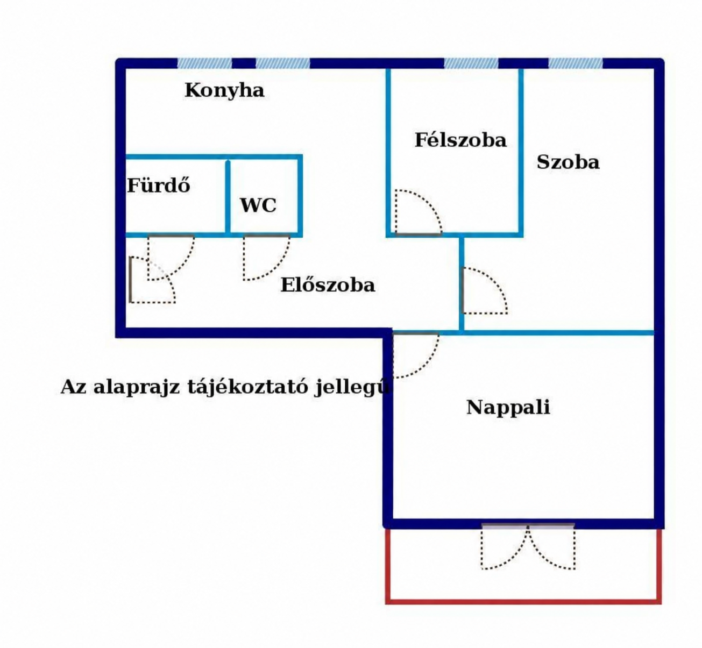
04 / AMIRE A BEMUTATÓ ÉPÜL
Megőrzött források.
Jelölt közelítések.
A hirdető közlése
A Nagy Imre úti lakás a hirdetés szerint az elmúlt 4–5 évben felújításon esett át. Egyedi mérős távfűtés, cserélt radiátorok és hűtő-fűtő klíma szerepelnek a leírásban.
*Az erkély két végén tárolási lehetőség található; ezek belsejéről nincs fotó. A ház előtt a hirdetés szerint ingyenes a parkolás.
Hirdetési dátum: 2026. október 22., 9:46.
Ez a bemutató nem igazolja az ingatlan aktuális elérhetőségét.
A képek és a modell
A képek MI-vel végzett retusálást kaptak: fény- és színkorrekció, jelölések és alkalmi rendetlenség eltávolítása; egyes finom textúrák és tükröződések generatívan újraalkotva. Az eredetik változatlanul megőrizve.
A térmodell nem hiteles felmérés. A WC és a tárolók belső berendezését nem rekonstruáltuk. A kék szoba állapotát AI-jelölt kép alapján nem tekintjük igazoltnak.
Az összes eredeti hirdetési kép 12 kép · köztük 3 AI-jelölt illusztráció
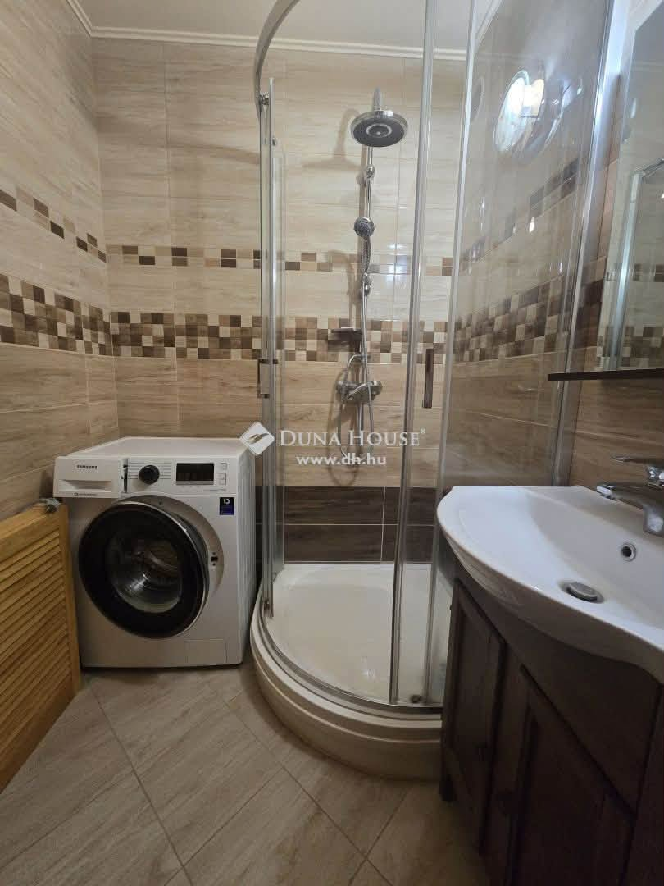
01 / Fürdőszoba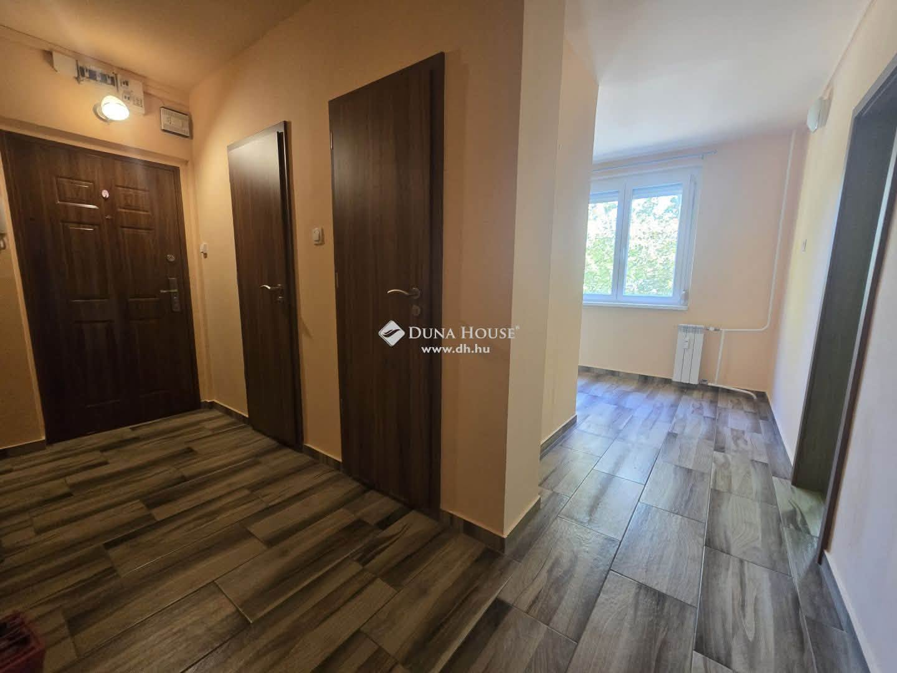
02 / Előszoba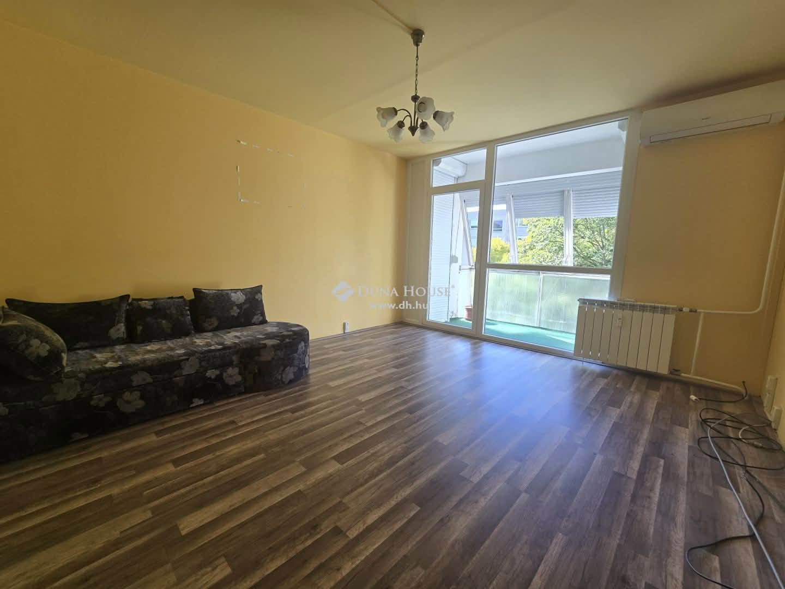
03 / Nappali az erkély felé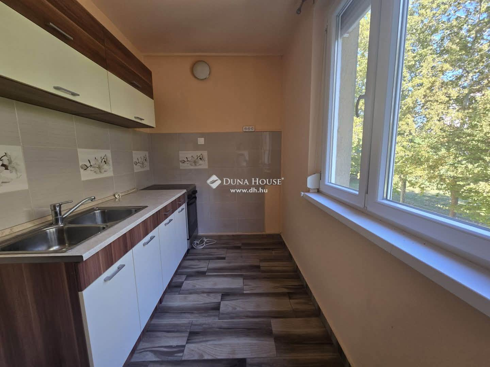
04 / Konyha az ablak felé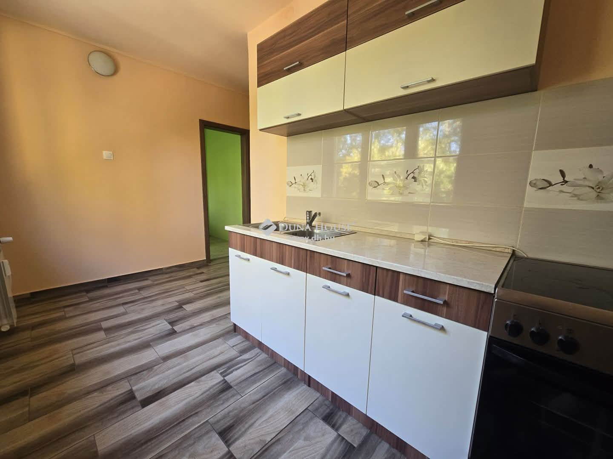
05 / Konyha az előszoba felé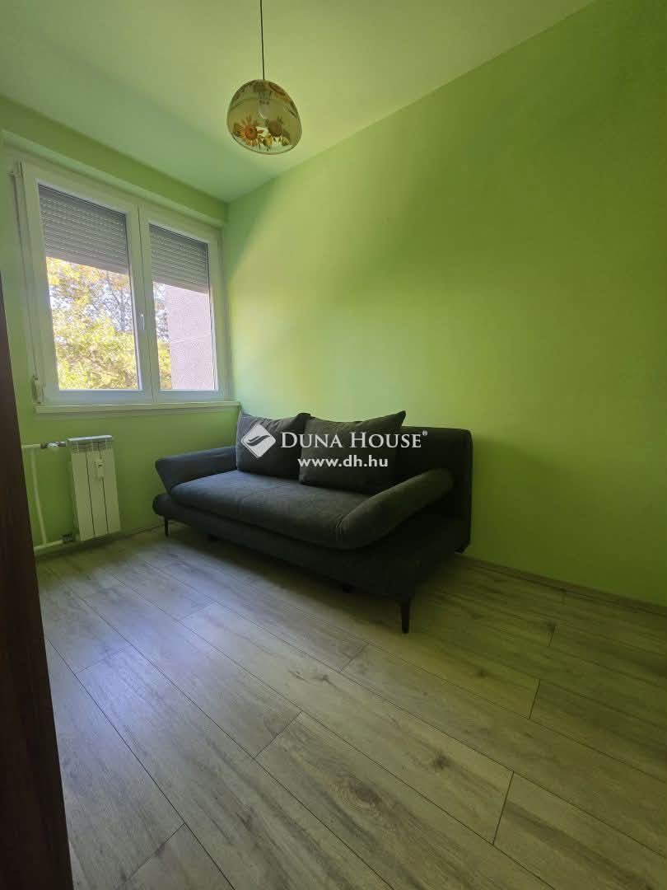
06 / Zöld félszoba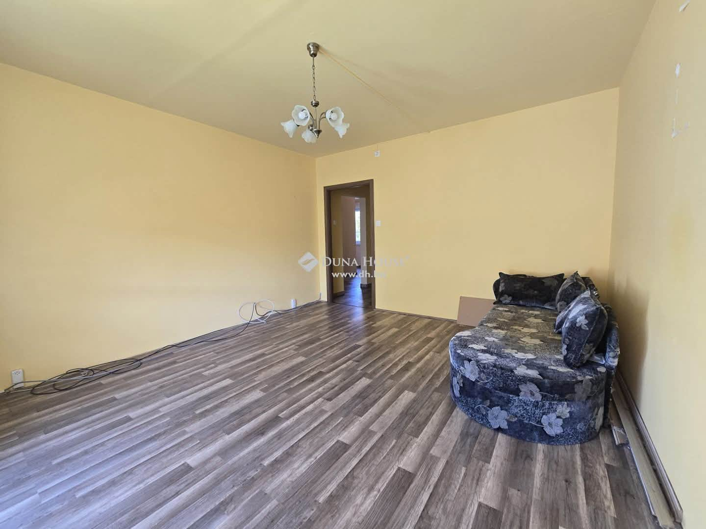
07 / Nappali az előszoba felé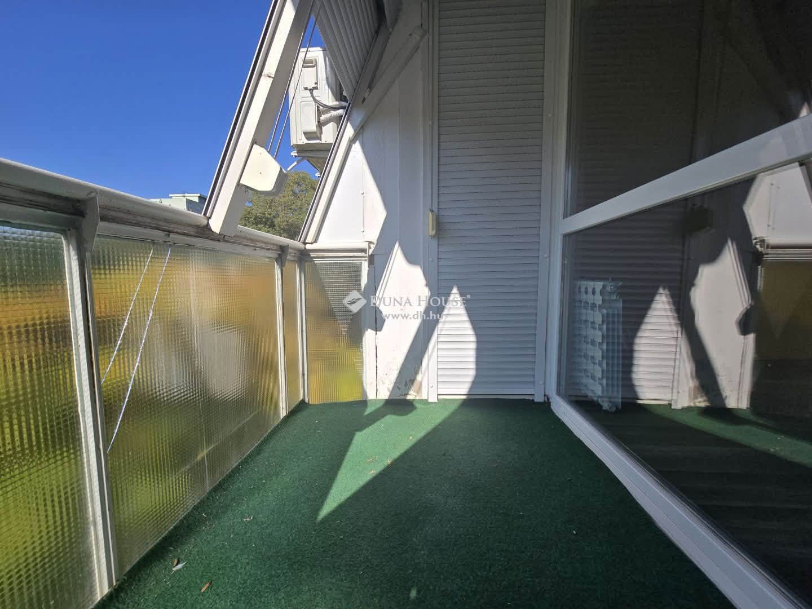
08 / Beüvegezett erkély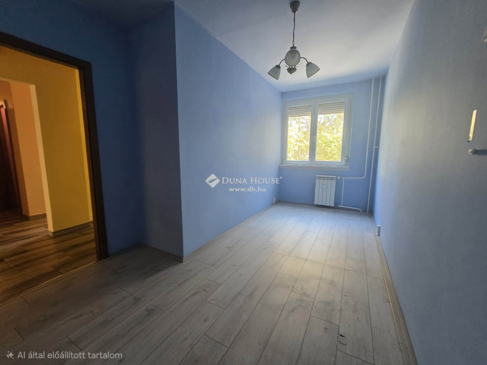
09 / Kék szoba · AI-forrásillusztrációAI-JELÖLT FORRÁSILLUSZTRÁCIÓ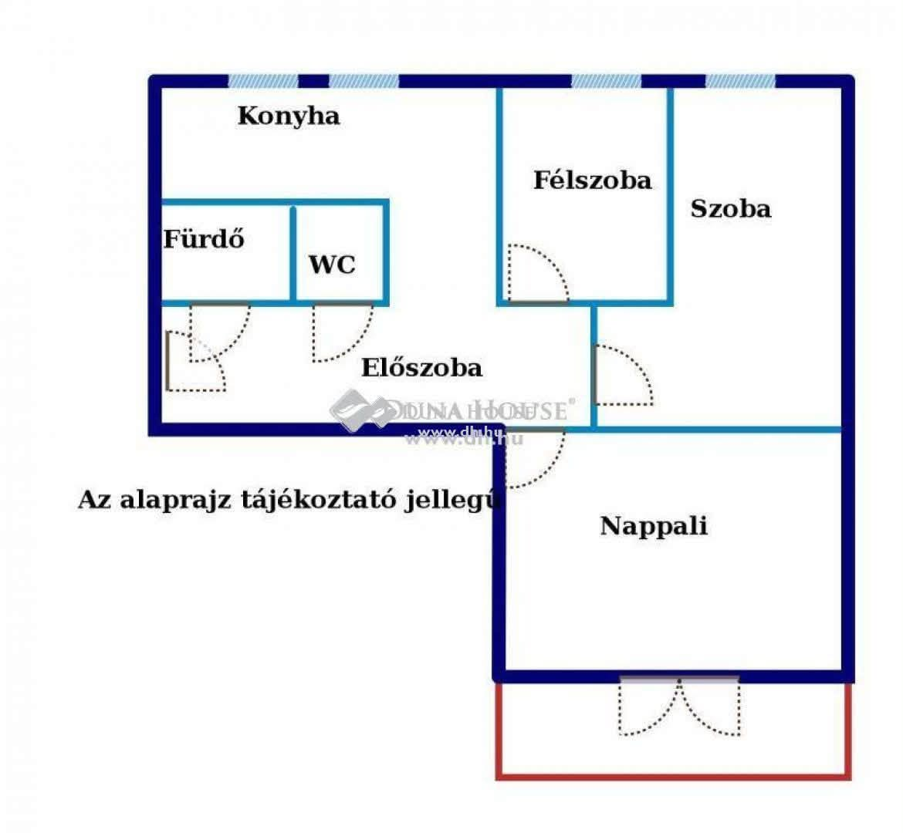
10 / Tájékoztató alaprajz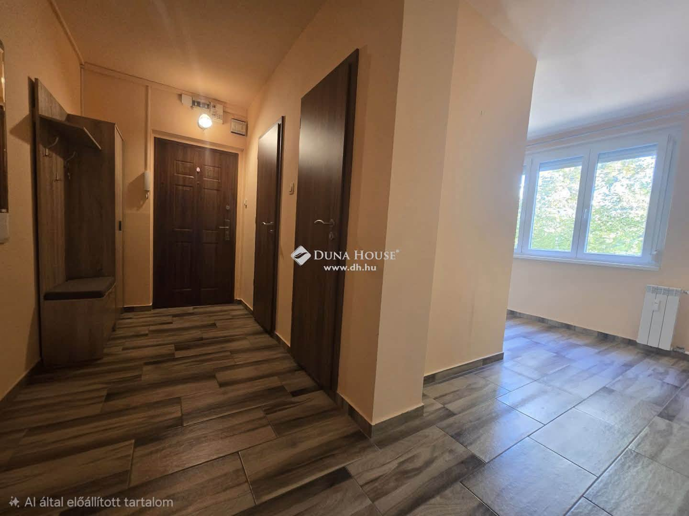
11 / Előszoba · AI-forrásillusztrációAI-JELÖLT FORRÁSILLUSZTRÁCIÓ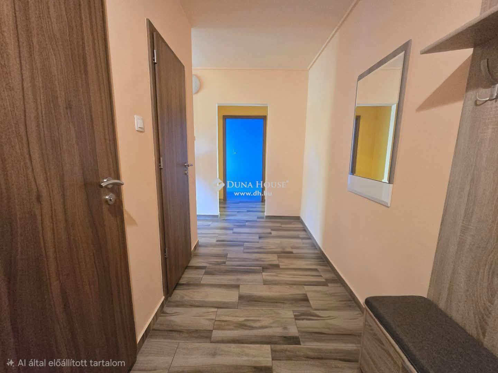
12 / Előszoba · AI-forrásillusztrációAI-JELÖLT FORRÁSILLUSZTRÁCIÓA 09., 11. és 12. kép a forrásban „AI által előállított tartalom” jelölést visel. Külön forrásillusztrációként szerepelnek, nem igazolt jelenlegi állapotfotóként. A 10. kép tájékoztató alaprajz.
KÖVETKEZŐ LÉPÉS
Érdemes élőben
is körülnézni.
A részletekről, az aktuális árról és a megtekintésről a hirdető ad tájékoztatást.
Ulrika Niesz · +36 20 350 4106 ↗